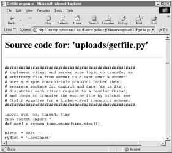

| I l@ve RuBoard |
|
12.7 Sending Files to Clients and ServersIt's time to explain a bit of HTML code we've been keeping in the shadows. Did you notice those hyperlinks on the language selector example's main page for showing the CGI script's source code? Normally, we can't see such script source code, because accessing a CGI script makes it execute (we can see only its HTML output, generated to make the new page). The script in Example 12-23, referenced by a hyperlink in the main language.html page, works around that by opening the source file and sending its text as part of the HTML response. The text is marked with <PRE> as pre-formatted text, and escaped for transmission inside HTML with cgi.escape. Example 12-23. PP2E\Internet\Cgi-Web\Basics\languages-src.cgi#!/usr/bin/python ################################################################# # Display languages.cgi script code without running it. ################################################################# import cgi filename = 'languages.cgi' print "Content-type: text/html\n" # wrap up in html print "<TITLE>Languages</TITLE>" print "<H1>Source code: '%s'</H1>" % filename print '<HR><PRE>' print cgi.escape(open(filename).read( )) print '</PRE><HR>' When we visit this script on the Web via the hyperlink or a manually typed URL, the script delivers a response to the client that includes the text of the CGI script source file. It appears as in Figure 12-25. Figure 12-25. Source code viewer pageNote that here, too, it's crucial to format the text of the file with cgi.escape, because it is embedded in the HTML code of the reply. If we don't, any characters in the text that mean something in HTML code are interpreted as HTML tags. For example, the C++ < operator character within this file's text may yield bizarre results if not properly escaped. The cgi.escape utility converts it to the standard sequence < for safe embedding. 12.7.1 Displaying Arbitrary Server Files on the ClientAlmost immediately after writing the languages source code viewer script in the previous example, it occurred to me that it wouldn't be much more work, and would be much more useful, to write a generic version -- one that could use a passed-in filename to display any file on the site. It's a straightforward mutation on the server side; we merely need to allow a filename to be passed in as an input. The getfile.cgi Python script in Example 12-24 implements this generalization. It assumes the filename is either typed into a web page form or appended to the end of the URL as a parameter. Remember that Python's cgi module handles both cases transparently, so there is no code in this script that notices any difference. Example 12-24. PP2E\Internet\Cgi-Web\Basics\getfile.cgi#!/usr/bin/python
#################################################################
# Display any cgi (or other) server-side file without running it.
# The filename can be passed in a URL param or form field; e.g.,
# http://server/~lutz/Basics/getfile.cgi?filename=somefile.cgi.
# Users can cut-and-paste or "View source" to save file locally.
# On IE, running the text/plain version (formatted=0) sometimes
# pops up Notepad, but end-of-lines are not always in DOS format;
# Netscape shows the text correctly in the browser page instead.
# Sending the file in text/html mode works on both browsers--text
# is displayed in the browser response page correctly. We also
# check the filename here to try to avoid showing private files;
# this may or may not prevent access to such files in general.
#################################################################
import cgi, os, sys
formatted = 1 # 1=wrap text in html
privates = ['../PyMailCgi/secret.py'] # don't show these
html = """
<html><title>Getfile response</title>
<h1>Source code for: '%s'</h1>
<hr>
<pre>%s</pre>
<hr></html>"""
def restricted(filename):
for path in privates:
if os.path.samefile(path, filename): # unify all paths by os.stat
return 1 # else returns None=false
try:
form = cgi.FieldStorage( )
filename = form['filename'].value # url param or form field
except:
filename = 'getfile.cgi' # else default filename
try:
assert not restricted(filename) # load unless private
filetext = open(filename).read( )
except AssertionError:
filetext = '(File access denied)'
except:
filetext = '(Error opening file: %s)' % sys.exc_value
if not formatted:
print "Content-type: text/plain\n" # send plain text
print filetext # works on NS, not IE
else:
print "Content-type: text/html\n" # wrap up in html
print html % (filename, cgi.escape(filetext))
This Python server-side script simply extracts the filename from the parsed CGI inputs object, and reads and prints the text of the file to send it to the client browser. Depending on the formatted global variable setting, it either sends the file in plain text mode (using text/plain in the response header) or wrapped up in an HTML page definition (text/html). Either mode (and others) works in general under most browsers, but Internet Explorer doesn't handle the plain text mode as gracefully as Netscape -- during testing, it popped up the Notepad text editor to view the downloaded text, but end-of-line characters in Unix format made the file appear as one long line. (Netscape instead displays the text correctly in the body of the response web page itself.) HTML display mode works more portably with current browsers. More on this script's restricted file logic in a moment. Let's launch this script by typing its URL at the top of a browser, along with a desired filename appended after the script's name. Figure 12-26 shows the page we get by visiting this URL: http://starship.python.net/~lutz/Basics/getfile.cgi?filename=languages-src.cgi Figure 12-26. Generic source code viewer pageThe body of this page shows the text of the server-side file whose name we passed at the end of the URL; once it arrives, we can view its text, cut-and-paste to save it in a file on the client, and so on. In fact, now that we have this generalized source code viewer, we could replace the hyperlink to script languages-src.cgi in language.html, with a URL of this form: http://starship.python.net/~lutz/Basics/getfile.cgi?filename=languages.cgi For illustration purposes, the main HTML page in Example 12-16 has links both to the original source code display script, as well as to the previous URL (less the server and directory paths, since the HTML file and getfile script live in the same place). Really, URLs like these are direct calls (albeit, across the Web) to our Python script, with filename parameters passed explicitly. As we've seen, parameters passed in URLs are treated the same as field inputs in forms; for convenience, let's also write a simple web page that allows the desired file to be typed directly into a form, as shown in Example 12-25. Example 12-25. PP2E\Internet\Cgi-Web\Basics\getfile.html<html><title>Getfile: download page</title> <body> <form method=get action="getfile.cgi"> <h1>Type name of server file to be viewed</h1> <p><input type=text size=50 name=filename> <p><input type=submit value=Download> </form> <hr><a href="getfile.cgi?filename=getfile.cgi">View script code</a> </body></html> Figure 12-27 shows the page we receive when we visit this file's URL. We need to type only the filename in this page, not the full CGI script address. Figure 12-27. source code viewer selection pageWhen we press this page's Download button to submit the form, the filename is transmitted to the server, and we get back the same page as before, when the filename was appended to the URL (see Figure 12-26). In fact, the filename will be appended to the URL here, too; the get method in the form's HTML instructs the browser to append the filename to the URL, exactly as if we had done so manually. It shows up at the end of the URL in the response page's address field, even though we really typed it into a form.[13]
12.7.1.1 Handling private files and errorsAs long as CGI scripts have permission to open the desired server-side file, this script can be used to view and locally save any file on the server. For instance, Figure 12-28 shows the page we're served after asking for file path ../PyMailCgi/index.html -- an HTML text file in another application's subdirectory, nested within the parent directory of this script.[14] Users can specify both relative and absolute paths to reach a file -- any path syntax the server understands will do.
Figure 12-28. Viewing files with relative pathsMore generally, this script will display any file path for which the user "nobody" (the username under which CGI scripts usually run) has read access. Just about every server-side file used in web applications will, or else they wouldn't be accessible from browsers in the first place. That makes for a flexible tool, but it's also potentially dangerous. What if we don't want users to be able to view some files on the server? For example, in the next chapter, we will implement an encryption module for email account passwords. Allowing users to view that module's source code would make encrypted passwords shipped over the Net much more vulnerable to cracking. To minimize this potential, the getfile script keeps a list, privates, of restricted filenames, and uses the os.path.samefile built-in to check if a requested filename path points to one of the names on privates. The samefile call checks to see if the os.stat built-in returns the same identifying information for both file paths; because of that, pathnames that look different syntactically but reference the same file are treated as identical. For example, on my server, the following paths to the encryptor module are different strings, but yield a true result from os.path.samefile: ../PyMailCgi/secret.py /home/crew/lutz/public_html/PyMailCgi/secret.py Accessing either path form generates an error page like that in Figure 12-29. Figure 12-29. Accessing private filesNotice that bona fide file errors are handled differently. Permission problems and accesses to nonexistent files, for example, are trapped by a different exception handler clause, and display the exception's message to give additional context. Figure 12-30 shows one such error page. Figure 12-30. File errors displayAs a general rule of thumb, file-processing exceptions should always be reported in detail, especially during script debugging. If we catch such exceptions in our scripts, it's up to us to display the details (assigning sys.stderr to sys.stdout won't help if Python doesn't print an error message). The current exception's type, data, and traceback objects are always available in the sys module for manual display.
12.7.2 Uploading Client Files to the ServerThe getfile script lets us view server files on the client, but in some sense, it is a general-purpose file download tool. Although not as direct as fetching a file by FTP or over raw sockets, it serves similar purposes. Users of the script can either cut-and-paste the displayed code right off the web page or use their browser's View Source option to view and cut. But what about going the other way -- uploading a file from the client machine to the server? As we saw in the last chapter, that is easy enough to accomplish with a client-side script that uses Python's FTP support module. Yet such a solution doesn't really apply in the context of a web browser; we can't usually ask all of our program's clients to start up a Python FTP script in another window to accomplish an upload. Moreover, there is no simple way for the server-side script to request the upload explicitly, unless there happens to be an FTP server running on the client machine (not at all the usual case). So is there no way to write a web-based program that lets its users upload files to a common server? In fact, there is, though it has more to do with HTML than with Python itself. HTML <input> tags also support a type=file option, which produces an input field, along with a button that pops up a file-selection dialog. The name of the client-side file to be uploaded can either be typed into the control, or selected with the pop-up dialog. The HTML page file in Example 12-26 defines a page that allows any client-side file to be selected and uploaded to the server-side script named in the form's action option. Example 12-26. PP2E\Internet\Cgi-Web\Basics\putfile.html<html><title>Putfile: upload page</title>
<body>
<form enctype="multipart/form-data"
method=post
action="putfile.cgi">
<h1>Select client file to be uploaded</h1>
<p><input type=file size=50 name=clientfile>
<p><input type=submit value=Upload>
</form>
<hr><a href="getfile.cgi?filename=putfile.cgi">View script code</a>
</body></html>
One constraint worth noting: forms that use file type inputs must also specify a multipart/form-data encoding type and the post submission method, as shown in this file; get style URLs don't work for uploading files. When we visit this page, the page shown in Figure 12-31 is delivered. Pressing its Browse button opens a file-selection dialog, while Upload sends the file. Figure 12-31. File upload selection pageOn the client side, when we press this page's Upload button, the browser opens and reads the selected file, and packages its contents with the rest of the form's input fields (if any). When this information reaches the server, the Python script named in the form action tag is run as always, as seen in Example 12-27. Example 12-27. PP2E\Internet\Cgi-Web\Basics\putfile.cgi#!/usr/bin/python
#######################################################
# extract file uploaded by http from web browser;
# users visit putfile.html to get the upload form
# page, which then triggers this script on server;
# note: this is very powerful, and very dangerous:
# you will usually want to check the filename, etc.
# this will only work if file or dir is writeable;
# a unix 'chmod 777 uploads' command may suffice;
# file path names arrive in client's path format;
#######################################################
import cgi, string, os, sys
import posixpath, dospath, macpath # for client paths
debugmode = 0 # 1=print form info
loadtextauto = 0 # 1=read file at once
uploaddir = './uploads' # dir to store files
sys.stderr = sys.stdout # show error msgs
form = cgi.FieldStorage( ) # parse form data
print "Content-type: text/html\n" # with blank line
if debugmode: cgi.print_form(form) # print form fields
# html templates
html = """
<html><title>Putfile response page</title>
<body>
<h1>Putfile response page</h1>
%s
</html>"""
goodhtml = html % """
<p>Your file, '%s', has been saved on the server as '%s'.
<p>An echo of the file's contents received and saved appears below.
</p><hr>
<p><pre>%s</pre>
</p><hr>
"""
# process form data
def splitpath(origpath): # get file at end
for pathmodule in [posixpath, dospath, macpath]: # try all clients
basename = pathmodule.split(origpath)[1] # may be any server
if basename != origpath:
return basename # lets spaces pass
return origpath # failed or no dirs
def saveonserver(fileinfo): # use file input form data
basename = splitpath(fileinfo.filename) # name without dir path
srvrname = os.path.join(uploaddir, basename) # store in a dir if set
if loadtextauto:
filetext = fileinfo.value # reads text into string
open(srvrname, 'w').write(filetext) # save in server file
else:
srvrfile = open(srvrname, 'w') # else read line by line
numlines, filetext = 0, '' # e.g., for huge files
while 1:
line = fileinfo.file.readline( )
if not line: break
srvrfile.write(line)
filetext = filetext + line
numlines = numlines + 1
filetext = ('[Lines=%d]\n' % numlines) + filetext
os.chmod(srvrname, 0666) # make writeable: owned by 'nobody'
return filetext, srvrname
def main( ):
if not form.has_key('clientfile'):
print html % "Error: no file was received"
elif not form['clientfile'].filename:
print html % "Error: filename is missing"
else:
fileinfo = form['clientfile']
try:
filetext, srvrname = saveonserver(fileinfo)
except:
errmsg = '<h2>Error</h2><p>%s<p>%s' % (sys.exc_type, sys.exc_value)
print html % errmsg
else:
print goodhtml % (cgi.escape(fileinfo.filename),
cgi.escape(srvrname),
cgi.escape(filetext))
main( )
Within this script, the Python-specific interfaces for handling uploaded files are employed. They aren't much different, really; the file comes into the script as an entry in the parsed form object returned by cgi.FieldStorage as usual; its key is clientfile, the input control's name in the HTML page's code. This time, though, the entry has additional attributes for the file's name on the client. Moreover, accessing the value attribute of an uploaded file input object will automatically read the file's contents all at once into a string on the server. For very large files, we can instead read line by line (or in chunks of bytes). For illustration purposes, the script implements either scheme: based on the setting of the loadtextauto global variable, it either asks for the file contents as a string, or reads it line by line.[16] In general, the CGI module gives us back objects with the following attributes for file upload controls:
There are additional attributes not used by our script. Files represent a third input field object; as we've also seen, the value attribute is a string for simple input fields, and we may receive a list of objects for multiple-selection controls. For uploads to be saved on the server, CGI scripts (run by user "nobody") must have write access to the enclosing directory if the file doesn't yet exist, or to the file itself if it does. To help isolate uploads, the script stores all uploads in whatever server directory is named in the uploaddir global. On my site's Linux server, I had to give this directory a mode of 777 (universal read/write/execute permissions) with chmod to make uploads work in general. Your mileage may vary, but be sure to check permissions if this script fails. The script also calls os.chmod to set the permission on the server file such that it can be read and written by everyone. If created anew by an upload, the file's owner will be "nobody," which means anyone out in cyberspace can view and upload the file. On my server, though, the file will also be only writable by user "nobody" by default, which might be inconvenient when it comes time to change that file outside the Web (the degree of pain can vary per operation).
If both client and server do their parts, the CGI script presents us with the response page shown in Figure 12-32, after it has stored the contents of the client file in a new or existing file on the server. For verification, the response gives the client and server file paths, as well as an echo of the uploaded file with a line count (in line-by-line reader mode). Figure 12-32. Putfile response pageIncidentally, we can also verify the upload with the getfile program we wrote in the prior section. Simply access the selection page to type the pathname of the file on the server, as shown in Figure 12-33. Figure 12-33. Verifying putfile with getfile -- selectionAssuming uploading the file was successful, Figure 12-34 shows the resulting viewer page we will obtain. Since user "nobody" (CGI scripts) was able to write the file, "nobody" should be able to view it as well. Figure 12-34. Verifying putfile with getfile -- response Notice the URL in this page's address field -- the browser translated the / character we typed into the selection page to a %2F hexadecimal escape code before adding it to the end of the URL as a parameter. We met URL escape codes like this earlier in this chapter. In this case, the browser did the translation for us, but the end result is as if we had manually called one of the urllib quoting functions on the file path string. Technically, the %2F escape code here represents the standard URL translation for non-ASCII characters, under the default encoding scheme browsers employ. Spaces are usually translated to + characters as well. We can often get away without manually translating most non-ASCII characters when sending paths explicitly (in typed URLs). But as we saw earlier, we sometimes need to be careful to escape characters (e.g., &) that have special meaning within URL strings with urllib tools. 12.7.2.1 Handling client path formatsIn the end, the putfile.cgi script stores the uploaded file on the server, within a hardcoded uploaddir directory, under the filename at the end of the file's path on the client (i.e., less its client-side directory path). Notice, though, that the splitpath function in this script needs to do extra work to extract the base name of the file on the right. Browsers send up the filename in the directory path format used on the client machine; this path format may not be the same as that used on the server where the CGI script runs. The standard way to split up paths, os.path.split, knows how to extract the base name, but only recognizes path separator characters used on the platform it is running on. That is, if we run this CGI script on a Unix machine, os.path.split chops up paths around a / separator. If a user uploads from a DOS or Windows machine, however, the separator in the passed filename is \, not /. Browsers running on a Macintosh may send a path that is more different still. To handle client paths generically, this script imports platform-specific, path-processing modules from the Python library for each client it wishes to support, and tries to split the path with each until a filename on the right is found. For instance, posixpath handles paths sent from Unix-style platforms, and dospath recognizes DOS and Windows client paths. We usually don't import these modules directly since os.path.split is automatically loaded with the correct one for the underlying platform; but in this case, we need to be specific since the path comes from another machine. Note that we could have instead coded the path splitter logic like this to avoid some split calls: def splitpath(origpath): # get name at end
basename = os.path.split(origpath)[1] # try server paths
if basename == origpath: # didn't change it?
if '\\' in origpath:
basename = string.split(origpath, '\\')[-1] # try dos clients
elif '/' in origpath:
basename = string.split(origpath, '/')[-1] # try unix clients
return basename
But this alternative version may fail for some path formats (e.g., DOS paths with a drive but no backslashes). As is, both options waste time if the filename is already a base name (i.e., has no directory paths on the left), but we need to allow for the more complex cases generically. This upload script works as planned, but a few caveats are worth pointing out before we close the book on this example:
If you run into any of these limitations, you will have crossed over into the domain of suggested exercises. 12.7.3 More Than One Way to Push Bits Over the NetFinally, let's discuss some context. We've seen three getfile scripts at this point in the book. The one in this chapter is different than the other two we wrote in earlier chapters, but it accomplishes a similar goal:
The CGI- and HTTP-based putfile script here is also different from the FTP-based putfile in the last chapter, but it can be considered an alternative to both socket and FTP uploads. To help underscore the distinctions, Figure 12-35 and Figure 12-36 show the new putfile uploading the original socket-based getfile.[17]
Figure 12-35. A new putfile with the socket-based getfile uploadedReally, the getfile CGI script in this chapter simply displays files only, but can be considered a download tool when augmented with cut-and-paste operations in a web browser. Figures Figure 12-37 and Figure 12-38 show the CGI getfile displaying the uploaded socket-based getfile. Figure 12-36. A new putfile with the socket-based getfile Figure 12-37. A new getfile with the socket-based getfileFigure 12-38. A new getfile with the socket-based getfile downloadedThe point to notice here is that there are a variety of ways to ship files around the Internet -- sockets, FTP, and HTTP (web pages) can all move files between computers. Technically speaking, we can transfer files with other techniques and protocols, too -- POP email, NNTP news, and so on. Each technique has unique properties but does similar work in the end: moving bits over the Net. All ultimately run over sockets on a particular port, but protocols like FTP add additional structure to the socket layer, and application models like CGI add both structure and programmability. |
| I l@ve RuBoard |
|